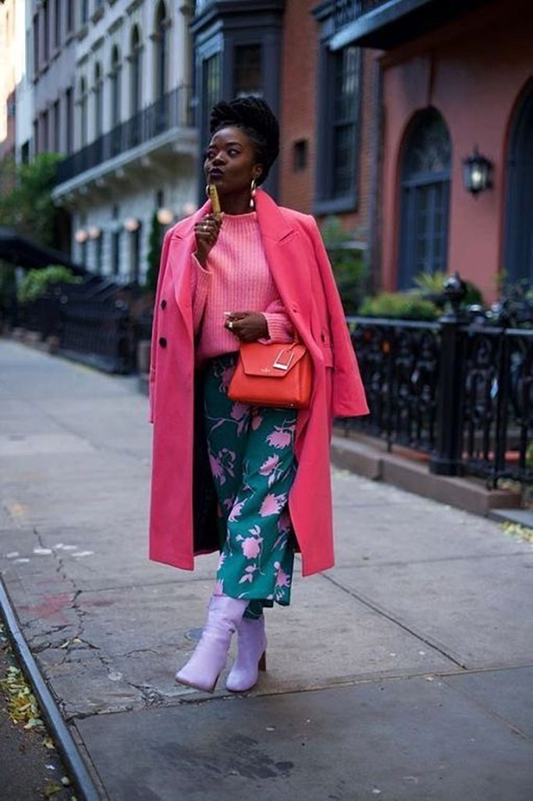

Nous voyons la vie en rose avec ces tenues qui nous donnerai presque envie d’être amoureux pour la vie.
Nous voyons la vie en rose avec ces tenues qui nous donnerai presque envie d’être amoureux pour la vie.

De la vitamine D en veux-tu ? en voilà ! une belle sélection de pièces orange qui réveille et fait du bien aux morales ! une sensation de chaleur et de bonne humeur s’émane de ces looks pour notre plus grand plaisir ! Que ce soit avec des daddy’s shoes ou une jolie paire de talon, le résultat est le même... cela fait sensation !


` Ici ce sont aux couleurs violine et bleues que nous pouvons dire merci ! la jupe longue est mise à l’honneur avec ce joli jeu de drapées et de matière qui sait donner de la volupté et de la fluidité à ces looks. Que ce soit en tulle ou en satin, à fente ou dégradé, l’effet est escompté ! Cela me rappelle notre célèbre Carrie Bradshaw !
Liens pour retrouver vos pièces favorites à petit prix